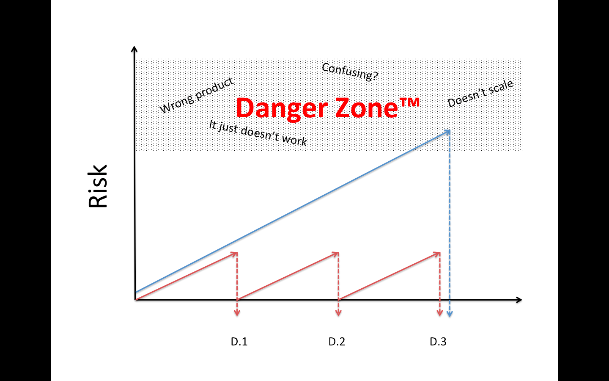

Software legend Martin Fowler defines continuous deployment as "a software development practice where members of a team integrate their work frequently, usually each person integrates at least daily - leading to multiple integrations per day." Fowler's seminal article defines the key best practices as:
While there are many technical benefits to this process, perhaps the key business benefit is an overall reduction in the risk profile for a project. Risk might include things like changes in the market condition, lack of user feedback, and a host of other hard and soft factors. Entrepreneur Lukas Fittl shows the process effect of CI as a sawtooth curve that minimizes risk through frequent deploys:
